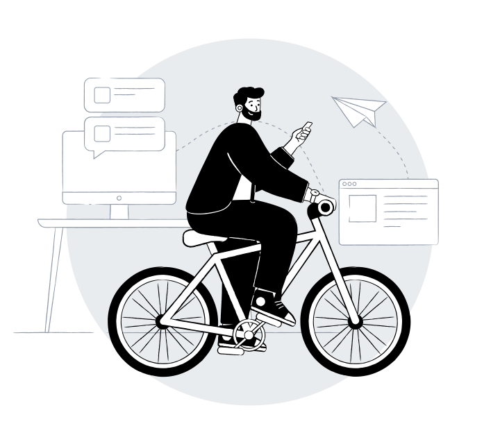

My Name is
Anggi Fauzan
I am a graduate of Informatics Engineering. I am very enthusiastic about technology. I am also active in organizations. This experience makes me able to work effectively in a team. I am eager to learn and contribute, and I have a special interest in data analysis, mobile development, and UI/UX.
